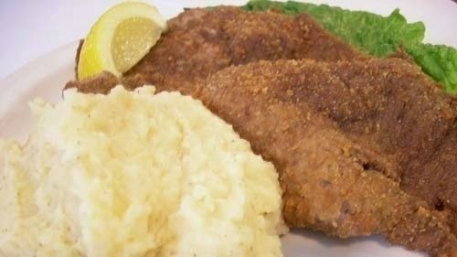

Milanesa con puré

Preparación:
Receta de milanesa con puré de papas Lo primero será poner las papas a cocerse, así que las pelas, lavas bien en agua y troceas en gajos que pones en una cacerola con bastante agua y un poco de sal para que se hagan por 20 minutos. Una vez que estén hechas, las sacas del agua y machacas en un cuenco grande o en una cacerola. Mezcla con leche, crema y manteca, en la cantidad que necesites, hasta que el puré consigas que tenga la textura que tú quieras. Bate los huevos con perejil y un poco de sal para que ambos ingredientes se integren bien en los huevos. Baña bien la carne en el huevo batido y luego la rebozas en un plato de pan rallado por ambos lados. Cada filete vas a sofreírlo en una sartén con bastante aceite de girasol para que se doren bien. Una vez los saquen, déjalos reposar un poco en un plato con papel absorbente para que suelten el exceso de aceite. Acompaña la carne rebozada con puré de patatas y listo para cenar.Escribe un comentario:

Augusto: Es mi plato préferido, la verdad que es una cómida muy rica para comer.

Rocío: Gracias por la receta a mi esposo le encantan!!!!.
Asado Argentino

Preparación:
- Lo primero prender el fuego, todos los parrilleros argentinos tiene su propio metido para hacer un buen fuego. No importa la forma como lo hagas sino que hagas bastantes brasas, el fuego a un costado de la parrilla, una vez que tengamos el fuego, distribuimos un poco de brasas por debajo de la parrilla y dejamos que se caliente bien.
- Cuando la parrilla este calienta, le pasamos papel de diario para limpiarla y ponemos las tiras de asado con los huesos mirando a las brasas. Sobre la sal, algunos lo hacen antes de ponerla en la parrilla, otros cuando esta en la parrilla, le hacen un capa por arriba y listo. Va en gustos. Si es el típico asado argentino se hace solamente con sal y ningún otro condimento.
- La tira de asado de hace a fuego medio pero que el calor sea constante y firme, el tiempo depende del grosor, pero más o menos son 40minutos y cuando la das vuelta unos 20 minutos del otro lado, así sale a punto. Para saber cuando darla vuelta, tiene que calentarse la carne hasta que en la superficie ves unas gotitas de sangre.
- Si es muy gruesa y los costados los ves muy rojos, dale un toque por los costados, 2 a 3 minutos de cada lado.
- Sacar de la parrilla sobre una tabla de madera, cortar en trozos que lleven uno o dos huesos y ponerlos en una fuente.
- Pasar la fuente entre los invitados para que elijan los cortes, mas o menos jugosos a su gusto. Y a esperar el aplauso.
Escribe un comentario:
Eduardo: Esta receta es una de mis preferidas, nada mejor que un asado Argentino acompañado de un buen vino!!